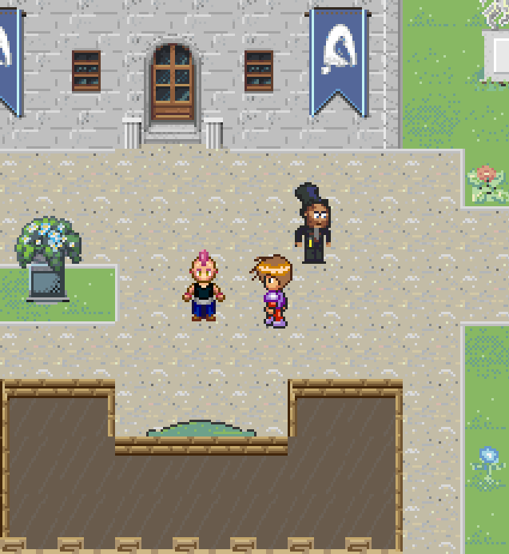

Montrehack.ca // 2022-04-21

NORTHSEC 2021 CTF Badge
presented by the badge team
The plan for tonight
3 hour workshop, 2 hours of hacking
- Dive right in. Hands-on session: 30 minutes
- About the badge
- Challenge solution
- Hands-on session: 30 minutes
- Another challenge solution
-
[ Hands-on session: 15 minutes, followed
by solutions ] x4
All flags are in the public source code on Github, but don't go looking for them.
The goal is to learn how to hack an unknown, blackbox device.
Reverse engineering challenges
Two binaries for the reverse-engineering challenge are hosted on the badge and can be downloaded over Wifi.
Download them from Github:
https://github.com/nsec/nsec-badge/tree/master/bin
Because of the guest network setup, connecting to the badge on Wifi may not be possible.
Write-ups
This presentation will include some solutions and images from write-ups made by participants from last year.
You should read them after the workshop because they are very entertaining, go much more in detail and describe the trial and error process of the author.
- https://erichogue.ca/2021/05/NorthSec2021BadgeFirstFlags/
- https://hideandsec.sh/books/ctf/page/northsec-2021-badge-writeup
- https://blog.quantumlyconfused.com/ctf/2021/05/30/nsec2021-badgelife-pt1/
- https://boschko.ca/northsec-2021-badge-writeup/
-
https://nsec.io/competition-write-ups/
^ All NorthSec challenge write-ups
Hacking session!
About the badge
- A traditional element of the in-person
NorthSec conference - The "game" is not a real game
- Designed without any particular goal in mind,
the end result is "organic" - Beginner-level CTF
- The purpose is to teach you
to pay attention to small details
The making
Flagbot
Have you ever heard of
'Konami code'?
The Konami Code is a cheat code that appears in many Konami video games. The player has to press a sequence of buttons on the game controller to enable a cheat or other effects.
https://en.wikipedia.org/wiki/Konami_code

* some variations of this sequence exist
Are u listening?
The badge has Wifi connectivity,
so it can be classified as an IoT device.
Does it try to talk to anything?
Does it "call home"?
** Difficult to do the correct setup
during the workshop.
For most participants during the CTF,
this was the most difficult flag,
so we'll discuss it first.
A hint left on the Discord channel:
If the badge tried to do curl https://nsec.io/flag.txt for example, do you think you would be able to detect this with your current setup?


Hacking session!
Where there are NO flags?
- On the badge itself (silkscreen, etc.)
- In the sound effects
- In the LED blinking patterns
- In the weird 6-pin connectors on the body
and the head of the horse - On the badge webpage
- In the firmware of the CH340C chip (U3)
Le Lac du Quack


Always look for serial console on the device!
It may output very useful information,
such as debug log or error messages.
$ picocom -b 115200 /dev/ttyUSB0
picocom v3.1
port is : /dev/ttyUSB0
flowcontrol : none
baudrate is : 115200
parity is : none
databits are : 8
stopbits are : 1
escape is : C-a
local echo is : no
noinit is : no
noreset is : no
hangup is : no
nolock is : no
send_cmd is : sz -vv
receive_cmd is : rz -vv -E
imap is :
omap is :
emap is : crcrlf,delbs,
logfile is : none
initstring : none
exit_after is : not set
exit is : no
ANSI escape sequences are a standard for in-band signaling to control cursor location, color, font styling, and other options on video text terminals and terminal emulators.
https://en.wikipedia.org/wiki/ANSI_escape_code
\x1b[?1049h
\x1b[H\x1b[2J\x1b[3J
\x1b[?1049l


https://en.wikipedia.org/wiki/Morse_code

static constexpr char quack[] =
"quackquackquickquack quickquickquack quickquack quackquickquackquick "
"quackquickquack quickquick quackquack quickquack quackquickquick "
"quickquickquack quackquickquackquick quackquickquack quack "
"quackquackquack quackquackquick quick quack quackquickquickquick "
"quickquackquick quick quickquack quackquickquick quickquickquack "
"quickquickquick quick quack quickquickquickquick quickquick "
"quickquickquick quickquickquackquick quickquackquickquick quickquack "
"quackquackquick quackquickquickquick quackquick quickquickquickquack "
"quackquackquickquick quackquickquack quickquack quickquackquack "
"quackquack quickquickquick quackquickquackquack quickquickquick";
Hacking session!
Up-down-left-right
The off-limits island
Can't swim. Can't fly.
No choice but to walk.
user@linux:esp32/spiffs/rpg$ tree
.
├── main.blocked
└── main.scene
0 directories, 2 files
user@linux:esp32/spiffs/rpg$ xxd main.blocked | head
00000000: ffff ffff ffff ffff ffff ffff ffff ffff ................
00000010: ffff ffff ffff ffff ffff ffff ffff ffff ................
00000020: ffff ffff ffff ffff ffff ffff ffff ffff ................
00000030: ffff ffff ffff ffff ffff ffff ffff ffff ................
00000040: ffff ffff ffff ffff ffff ffff ffff ffff ................
00000050: ffff ffff ffff ffff ffff ffff ffff ffff ................
00000060: ffff ffff 81ff ffff 01f8 ffff ffff 1f00 ................
00000070: f8ff ff1f 0000 0000 ffff ffff ff81 ffff ................
00000080: ff01 f8ff ffff ff1f 00f8 ffff 1f00 0000 ................
00000090: 00ff ffff ffff 9fff ffff 01f8 ffff ffff ................

How do I get past the gate?
Hacking session!
Are you really CYBER!?


Hacking session!
RE challenge solutions

$ file re*.elf
re101.elf: ELF 32-bit LSB executable, Tensilica Xtensa,
version 1 (SYSV), statically linked, with debug_info, not stripped
re102.elf: ELF 32-bit LSB executable, Tensilica Xtensa,
version 1 (SYSV), statically linked, with debug_info, not stripped
RE challenge solutions
You need a disassembler.
- R2 / Rizin: out-of-the-box
-
Ghidra: with a plugin
https://github.com/yath/ghidra-xtensa - IDA: ???
re101.elf
re102.elf
About the 'bonus' flag
- Intended to be more difficult than other flags.
- Not counted by the FLAGBOT, you can get the full
Badge Wizard role with other 9 flags. - There is no actual flag, you have to make it.
- No intended solution - you are on your own.
- You need to modify the flash image to write it back to the badge.
- You can damage the firmware if you do this incorrectly.
- Because the firmware wasn't released until after NSEC, this means you risk "bricking" the badge.
Dump the firmware and run strings:
static const char firmware_dump_flag[] =
"Have you dumped the firmware? Here is your flag "
"[FLAG-JTAGPower0verwhelming]. Now flip the right bit in memory to "
"activate the last (10th) flag icon in the status bar on screen.";
Try to dump the full contents of the flash during the last hacking session.
It can be tricky to get it right...
Hacking session! (final)
Auto-complete my flag...
Welcome to the nsec badge console!
Type 'help' to get the list of commands.
Use UP/DOWN arrows to navigate through command history.
Press TAB when typing command name to auto-complete.
Welcome to the nsec badge console!
Type 'help' to get the list of commands.
Use UP/DOWN arrows to navigate through command history.
Press TAB when typing command name to auto-complete.
Just try it for yourself...
The 'bonus' flag
$ esptool.py read_flash --help
usage: esptool read_flash [-h] [--spi-connection SPI_CONNECTION]
[--no-progress] address size filename
positional arguments:
address Start address
size Size of region to dump
filename Name of binary dump
optional arguments:
-h, --help show this help message and exit
--spi-connection SPI_CONNECTION, -sc SPI_CONNECTION
ESP32-only argument. Override default SPI Flash
connection. Value can be SPI, HSPI or a comma-separated
list of 5 I/O numbers to use for SPI flash
(CLK,Q,D,HD,CS).
--no-progress, -p Suppress progress output
https://github.com/espressif/esptool
Alternatively, download from Github:
https://github.com/nsec/nsec-badge/releases/download/nsec21/nsec2021.bin
* wasn't an option during the CTF.
You have the flash image,
now what?
Extracting an ELF From an ESP32 -
Chris Lyne and Nick Miles (Shmoocon 2020)
https://www.youtube.com/watch?v=w4_3vwN_2dI
This video was discovered by participants.
ESP32 Firmware Image to ELF
https://github.com/tenable/esp32_image_parser
$ esp32_image_parser.py show_partitions nsec2021.bin
reading partition table...
entry 0:
label : nvs
offset : 0x9000
length : 24576
type : 1 [DATA]
sub type : 2 [WIFI]
entry 1:
label : phy_init
offset : 0xf000
length : 4096
type : 1 [DATA]
sub type : 1 [RF]
...
Dump NVS partition
https://docs.espressif.com/projects/esp-idf/en/latest/esp32/api-reference/storage/nvs_flash.html
$ esp32_image_parser.py dump_nvs nsec2021.bin -partition nvs | wc -l
2176
$ esp32_image_parser.py dump_nvs nsec2021.bin -partition nvs | grep Key
Key : storage
Key : misc
Key : log
Key : log
Key : nvs.net80211
Key : opmode
Key : sta.ssid
Key : sta.ssid
Key : sta.authmode
Key : sta.pswd
Key : sta.pswd
Key : sta.pmk
Key : sta.pmk
Key : sta.chan
Key : auto.conn
Key : bssid.set
Key : sta.bssid
Key : sta.bssid
Key : sta.lis_intval
Key : sta.phym
Key : sta.phybw
Key : sta.apsw
Key : sta.apsw
Key : sta.apinfo
Key : sta.apinfo
Key : sta.scan_method
Key : sta.sort_method
Key : sta.minrssi
Key : sta.minauth
Key : sta.pmf_e
Key : sta.pmf_r
Key : sta.btm_e
Key : sta.rrm_e
Key : ap.ssid
Key : ap.ssid
Key : ap.passwd
Key : ap.passwd
Key : ap.pmk
Key : ap.pmk
Key : ap.chan
Key : ap.authmode
Key : ap.hidden
Key : ap.max.conn
Key : bcn.interval
Key : ap.phym
Key : ap.phybw
Key : ap.sndchan
Key : ap.pmf_e
Key : ap.pmf_r
Key : lorate
Key : country
Key : country
Key : opmode
Key : phy
Key : cal_data
Key : cal_data
Key : cal_data
Key : cal_mac
Key : cal_mac
Key : cal_version
Key : opmode
Dump NVS partition
What is the correct key?
If you downloaded the stock flash image from Github,
you are out of luck.
The badge stores the flags in the save key,
which is created on the fly.
The only way to know this is dump the flash, activate some flag, dump it again, then compare two files.
Finding the saved flags
- Compare the two dumped flash images
- Locate the key that has changed

Finding the saved flags
Dump the partition with
$ esp32_image_parser.py dump_partition -partition nvs nsec2021.bin
Dumping partition 'nvs' to nvs_out.bin
Locate the correct byte
and change its value in a HEX editor.
Write the partition back
We extracted only one partition from the full flash image, so we cannot simply write it back - this will corrupt the firmware.
$ stat -c"%n %s" *bin
nsec2021.bin 16777216
nvs_out.bin 24576
We need to find the correct offset.
$ esp32_image_parser.py show_partitions nsec2021.bin
reading partition table...
entry 0:
label : nvs
offset : 0x9000
length : 24576
type : 1 [DATA]
sub type : 2 [WIFI]
...


What should you do next?
- Try to solve all challenges again, to make sure you understand all steps.
- Use this badge as a dev.board for your next IoT project.
- Follow #badgelife of Twitter.
- Port DOOM to it. (you never know)
- Participate in the next NorthSec for more
CTF craziness!